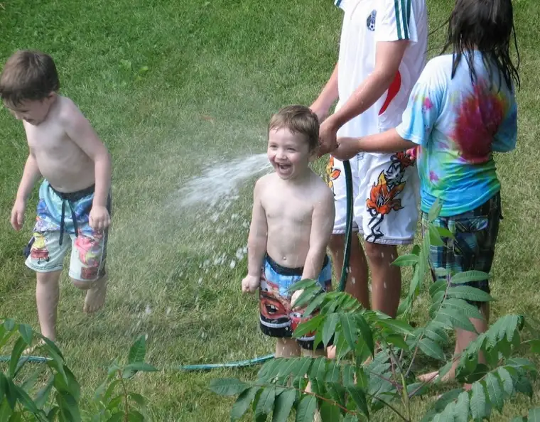

{kind=link}
And here’s another one I love, a favorite from this past summer taken at my friend’s lake home. I especially cherish the expression on the face of my youngest as he’s getting blasted by the sprinkler (thanks to the older kids who were all too happy to do the honor). But beyond that, look at those clenched fists — the muscle-tightening anticipation of the cold water invading his hot little body. And then there’s his brother, dashing away from the water wall, and his sister, trying to avoid a face splash of her own. That was a wonderful day that I will always cherish; a gathering of friends and some of our children at a quiet little spot a few hours from town. We enjoyed delicious food, a splash in the lake, watching the older kids float away from us on a huge intertube until they were almost invisible and we nearly called 911 (they were fine; simply enjoying their time away from the moms, is all), and an invigorating discussion about faith (part of our regular weekly faith-sharing group meeting that we transported to the new setting).
So, now you know the rest of the story! I hope this visual will bring you back to your own summertime memories, and remind you that the wintertime plunge does not last forever.
Peace…